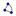

Note: The algebraic value of an arc is its length and the value of a sector is its area.
Arc[Conic,
Point A, Point B]: Returns a conic section arc between two points
A and B on the conic section c.
Note: This only works for a circle or ellipse.
Arc[Conic,
Number t1, Number t2]: Returns a conic section arc between two
parameter values t1 and t2 on the conic section.
Note: Internally the following parameter
forms are used:
· Circle: (r cos(t), r sin(t)) where r is the circle's radius.
· Ellipse: (a cos(t), b sin(t)) where a and b are the lengths of the semimajor and semiminor axis.
CircularArc[Point
M, Point A, Point B]: Creates a circular arc with midpoint M between points A and B.
Note: Point B does not have to lie on the arc.
Note: Also see tool Circular Arc with Center between Two Points
CircularSector[Point
M, Point A, Point B]: Creates a circular sector with midpoint M between two points A and B.
Note: Point B does not have to lie on the arc of the sector.
Note: Also see tool  Circular Sector with Center between Two Points
CircumcircularArc[Point A, Point B, Point C]: Creates a circular arc through three points A, B, and C, where A is the starting point and C is the endpoint of the circumcircular arc.
Note: Also see tool Circumcircular Arc through Three Points
CircumcircularSector[Point A, Point B, Point C]: Creates a circular sector whose arc runs through the three points A, B, and C. Point A is the starting point and point C is the endpoint of the arc.
Note: Also see tool Circumcircular Sector through Three Points
Sector[Conic,
Point A, Point B]: Yields a conic section sector between two
points A and B on the conic section.
Note: This works only for a circle or ellipse.
Sector[Conic,
Number t1, Number t2]: Yields a conic section sector between two
parameter values t1 and t2 on the conic section.
Note: Internally the following parameter
forms are used:
· Circle: (r cos(t), r sin(t)) where r is the circle's radius.
· Ellipse: (a cos(t), b sin(t)) where a and b are the lengths of the semimajor and semiminor axis.
Semicircle[Point A, Point B]: Creates a semicircle above the segment AB.
Note: Also see tool Semicircle